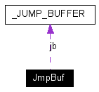

Main Page
Modules
Namespaces
Data Structures
Files
Related Pages
Alphabetical List
Data Structures
Class Hierarchy
Data Fields
JmpBuf Union Reference
[
Operating System
]
#include <
Apoxi/Kernel/Os/Nuc32/Scheduler.hpp
>
Collaboration diagram for JmpBuf:

[
legend
]
Data Fields
_JUMP_BUFFER
jb
jmp_buf
jb_std
Field Documentation
_JUMP_BUFFER
JmpBuf::jb
jmp_buf
JmpBuf::jb_std
The documentation for this union was generated from the following files:
Kernel/Os/Nuc32/
Scheduler.hpp
Kernel/Os/Win32/
Scheduler.hpp
Generated on Wed Jan 25 01:23:16 2006 for APOXI by
1.4.6-NO
 1.4.6-NO
1.4.6-NO